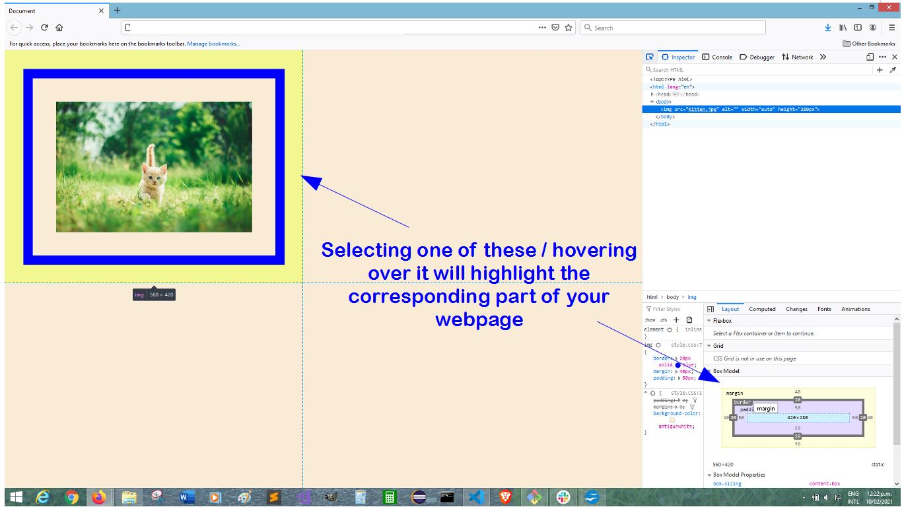

So you're well on track to becoming a web developer, but you've hit a snag... What on earth is the Margin, the border, and the padding? You wouldn't be the first to ask this and be mystified by how it works. So here in another keeping it simple article, is your guide to get started. Margin, padding, and border can be applied in your Cascading Style Sheets. (CSS)
In this example, we'll use a picture of a cat, the picture itself is the content. Around the content you can have padding, around the padding a border, and around the border, margin.
Padding is that area you never knew existed around the content itself. Adding padding will create space around the content.
A border works like any border you might add to your creation. Borders can be solid, dotted, dashed and more. You can have a thin border, or go as thick with the border as you want. Feel free to change up the colours also to create the flashest border out.
Outside of the border is the margin. It's space around the whole of the content, padding, and border. Again, add as much or little as you like. With both margin and padding, you can add equal amounts on every side, or you can have different amounts on each side.
So you've added your margin, a bit of padding, and a solid border,
but it doesn't quite look like you wanted? A great tool to use in
your browser to figure out what's going on is the Developer Tools.
Every browser will have this available, just google search the
shortcut to open it for the browser you're using.
I'm using Firefox, and the shorcut is Shift+Ctrl+C. In my Dev
Tools I click on the Inspector tab, and click the text of the
image – 'img'. Further down under the 'Layout' tab you'll see the
'Box Model'.
You can hover your mouse over this, and it will highlight
different parts of your image, padding, margin, and border in your
webpage. From there you'll be able to see exactly what's going on.
Within the Box Model, you can actually click on the numbers, your
40px for example, change it, and see it instantly update on your
webpage. But remember, if you like your changes, don't forget to
update it in your actual code!
As you move your mouse pointer over the Box Model, you will see the corresponding parts of the web page become highlighted.
Ready to try some different border styles? Here's a list of what you could add to style up your page...
This list is taken from W3 Schools Website, a great resource... check it out W3 Schools Website
So now you're confident adding padding and margin, here's a few
other things to note. You can add padding and margin to all four
sides. If each side is different you will have four values, one
for each side, and it is applied clockwise. But if the value is
to be the same on all sides, you only need one number. If you
wanted a margin of 20px at the top and bottom, and 10px on the
left and right, you could write margin: 20px 10px;
For more on margins check out
W3 Schools Margins
Now that you've mastered margin, padding, and border, the world is yours to conquer. Actually, you're probably still mystified by it all, but the best advice is to have a go playing around with it, try different numbers for the values and watch your image, and border move all over the page! -- experiment and don't worry, you won't break it!!